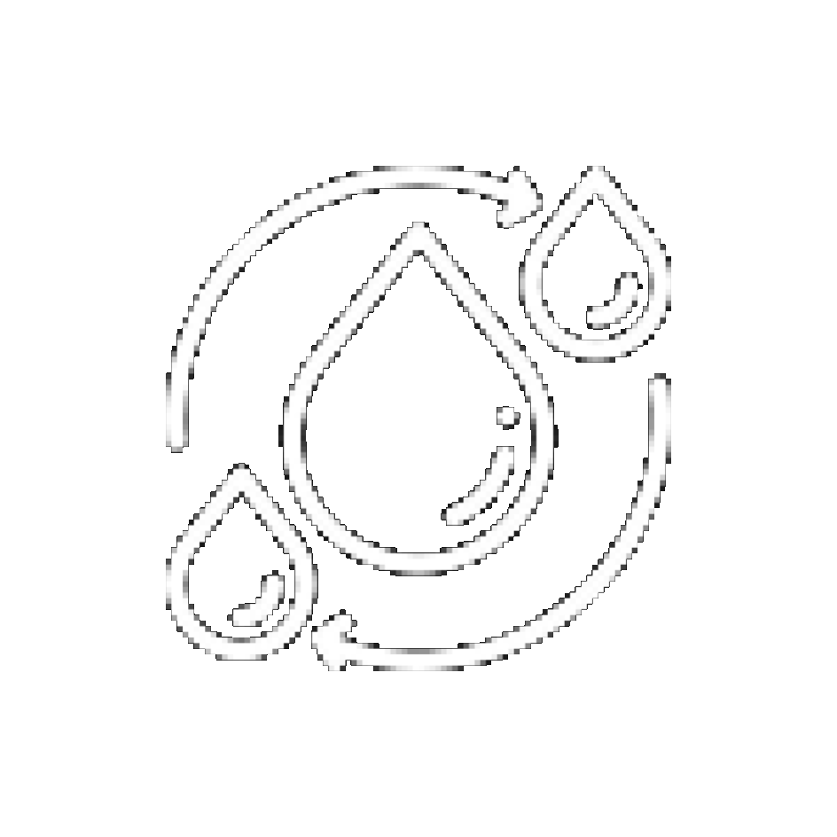
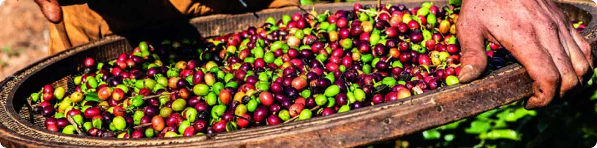
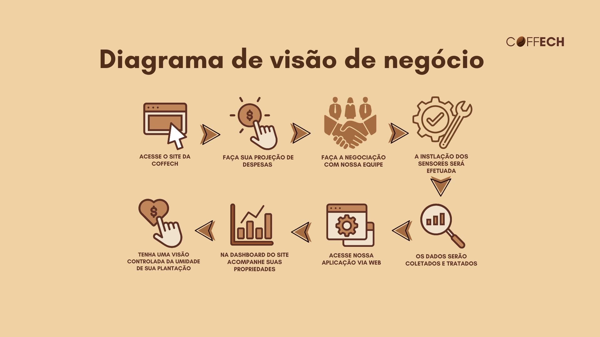
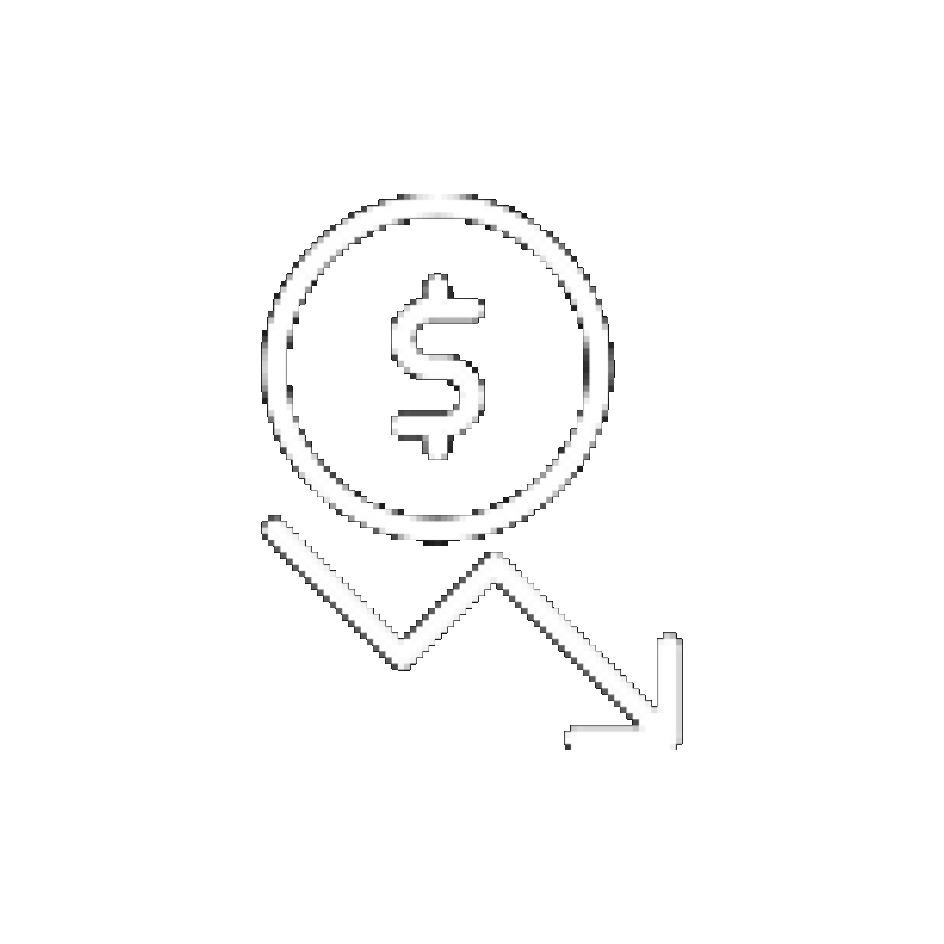

Até 30% de economia de água no manejo.
A Coffech nasceu com o propósito de levar tecnologia acessível e sustentável para o campo. Nosso foco é apoiar produtores de café na modernização da gestão de suas lavouras, garantindo mais produtividade, qualidade e eficiência no uso da água.

Desenvolvemos um sistema de monitoramento da umidade do solo integrado ao Arduino UNO R3 e sensores inteligentes. O produtor sabe quando e quanto irrigar, evitando desperdícios e garantindo uma produção mais saudável e lucrativa.


Até 30% de economia de água no manejo.

Redução nos gastos operacionais.
Café de maior qualidade e valor de mercado.
Decisões assertivas com base em dados reais.